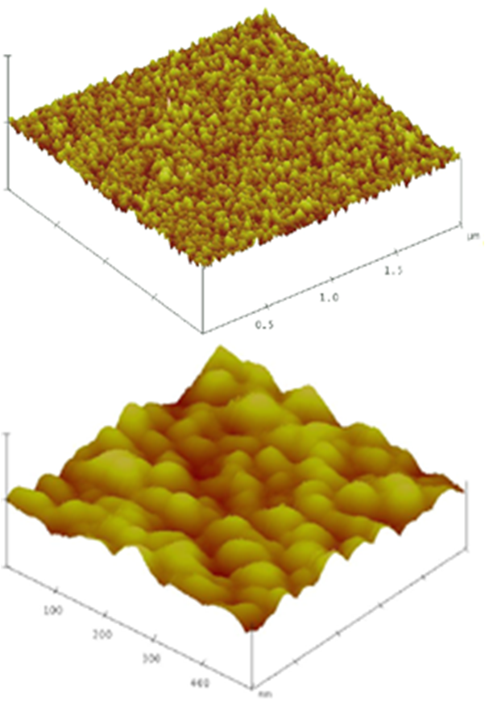
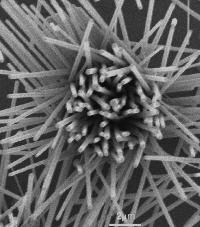

|
Dr. Aswini K. Pradhan Research Group Activities
Nanocomposite/Nano-structured Materials
-
Fabrication and characterization of Luminescent rare-earth doped rare-earth
and magnetic ion-doped semiconducting nanocpmposites, ceramics for
biochemical tag, detection and display technology.
-
Growth and characterization of magnetic nanomaterials in a matrix,
exhibiting outstanding self-assembly of nanoparticles,
coated (with silica/ODA) manganite
nanoparticles with excellent magnetic properties for biological
applications (drug delivery and detection).
-
Growth of Alligned ZnO nanorods for optoelectronic applications, gas
sensors, bio sensors and hybrid inorganic-organic solar cells.
-
Development of Co, Au and Ag nanowires on CdSe/Si, Metamaterials and
Semiconductors.
-
Magnetic
and luminescent nanostructured composites for Bio-medical applications
Growth of Aligned ZnO Nanorods
Growth of high-density and aligned ZnO nanorods on ZnO film
substrate has been demonstrated using vapor-transport of thermally evaporated Zn
metal powders followed by condensation. Morphological studies show that the
nanorods grow preferentially from a hexagonal ZnO base with a uniform hexagonal
structure following three-dimensional island-like growth mechanism. Structural
and spectroscopic properties clearly indicate that the nanorods are relatively
good and defect-free in quality. These nanorods have potential for technological
implications.
| |
|
 |
 |
 |
|
Fig. 1. Atomic force microscopic
(AFM) image of ZnO film substrate,
(a) over 2×2 micron, and (b) 0.5×0.5 micron area.
|
Fig. 2. SEM images of aligned ZnO
nanorods in a line displaying hexagonal top surface.
|
Fig. 3. SEM images of ZnO nanorod
bundle showing nanorods falling from the side.
|

|